Project Overview
One system, comprising of three engineering domains: mechanical design, computational modeling, and control/telemetry.
The project models a pressurized aerospace payload built around a high-pressure nitrogen cylinder, a mechanically designed support structure, a manifold/valve concept, and an automated control loop. The goal is to show how a physical system can be represented computationally and how telemetry can drive a defined safety response.
The project is intentionally presented as an HIL project and a simulation, not as a physical pressure test. The 60.1-second dataset shown below is an actual run of the software environment.
How can a payload controller continuously estimate pressure, detect an overpressure condition, command a relief-valve state, and log the resulting system response?
System Overview
The control chain is explicit and traceable.
Cylinder support
CAD models the cradle, strap, isolator pad, and manifold/valve hardware arrangement.
Thermodynamic state
Python calculates pressure from the ideal-gas relation and tracks pressure rate of change.
1 Hz logging
Each cycle records time, temperature, pressure, dP/dt, servo state, and total system mass to CSV.
Physics & Computational Model
The pressure model uses the ideal gas law in molar form:
Gas
N₂
30.0 mol
28.01 g/mol
State
V = 5.0 L
R = 0.0821 L·atm/(mol·K)
Temperature is updated every cycle.
Safety boundary
145 atm
If pressure exceeds the software ceiling, the simulated servo moves to 90° and the gas inventory is reduced by 6%.
Accounting for mass: Nitrogen mass is computed from moles × molecular weight and converted from grams to pounds, then added to the 10.43 lb hardware mass. This makes the telemetry mass change when the simulated vent removes gas.
Safety Control Logic
The controller does not represent a real pressure vessel or certify a real relief device. The servo and vent response are simulated within the HIL environment: temperature is increased to make pressure rise until the maximum pressure limit is reached, which then causes the simulated servo and vent response.
- Temperature is increased by a random 0.6-2.2 K each telemetry cycle.
- Pressure is recalculated from the current gas amount, temperature, and fixed 5.0 L volume.
- dP/dt, or the rate of change of pressure with respect to time, is calculated from the change in pressure over the elapsed time.
- If pressure exceeds 145 atm, the servo state changes from 0° CLOSED to 90° OPEN - VENTING.
- The simulated vent reduces gas moles by 6% and reduces the simulated temperature state by 6 K.
- The updated state is written to the telemetry CSV before the loop continues.
CAD & Mechanical Design
The mechanical side of the project was developed in Onshape and documented with a full drawing set.
Complete assembly
Primary system-level CAD view.
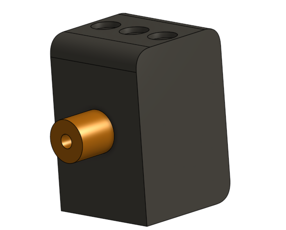
Manifold Block & Valve
Individual display of the manifold block alongside the valve/nozzle.
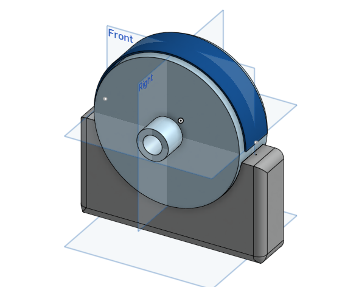
Gas Cylinder & Mounting Bracket
Single display of the cylinder payload along with the bracket for support.
Mass optimization
The support geometry uses shell features to remove material where possible while retaining the main structural form.
Fastener & tool clearance
The mounting holes were adjusted with thicker supports so the fasteners fit securely and remain accessible during assembly.
Vibration isolation
A separate isolator-pad concept sits between the strap and cylinder, providing a modeled interface for damping and protection.
Edge treatment
Fillets were incorporated to soften edges and reduce abrupt geometric transitions in the modeled structure.
Technical Drawing Set
Nine drawing sheets document the geometry and assembly. Click any sheet to enlarge it.
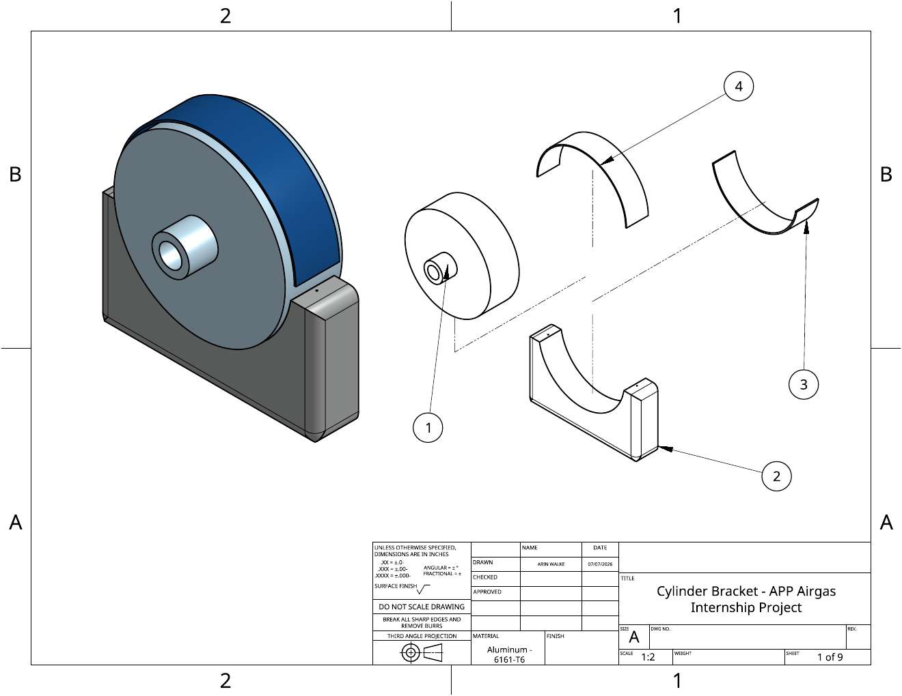
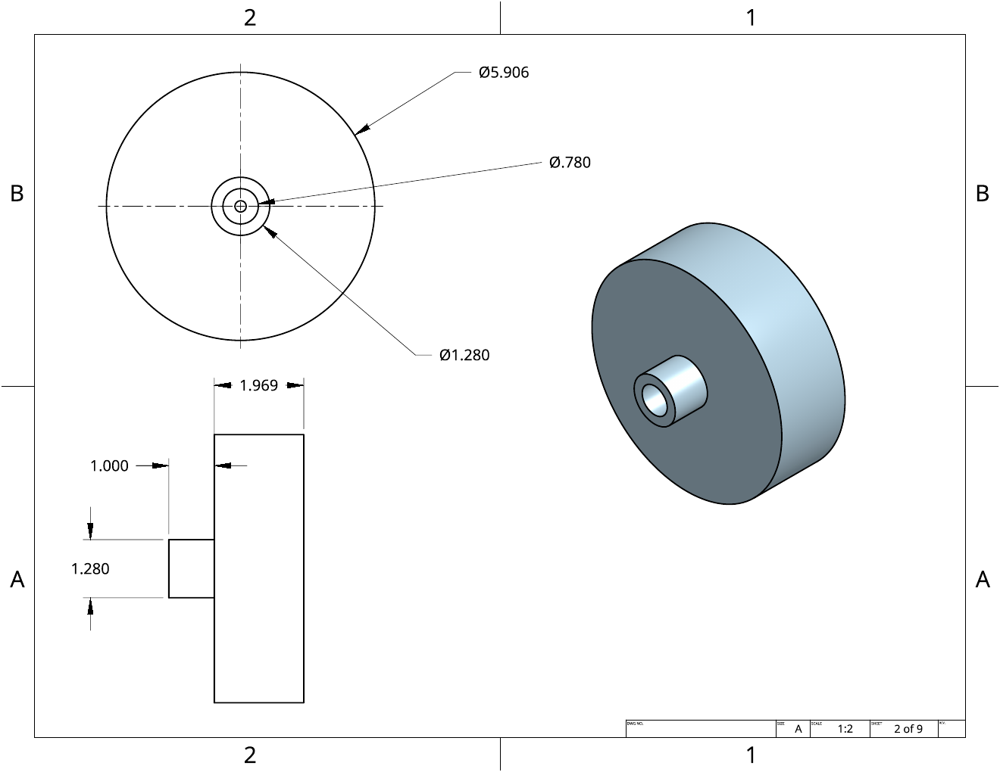
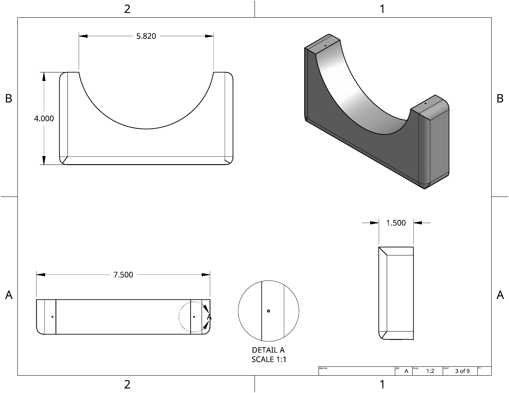
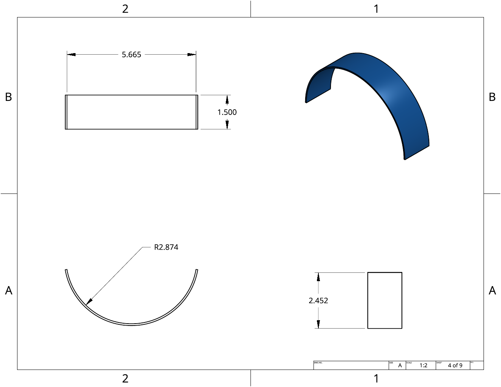
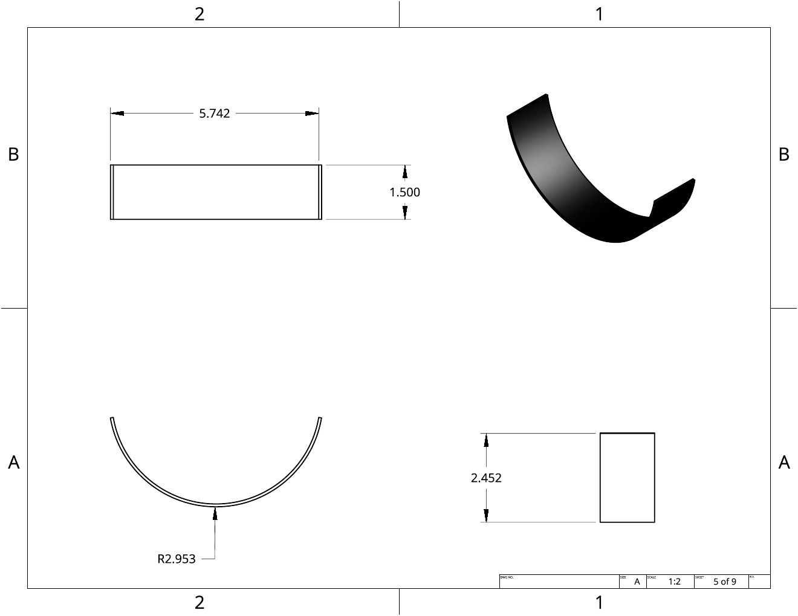
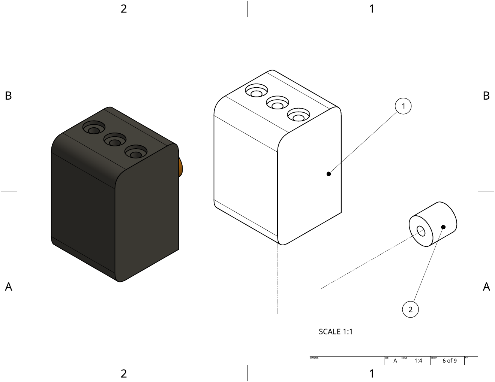
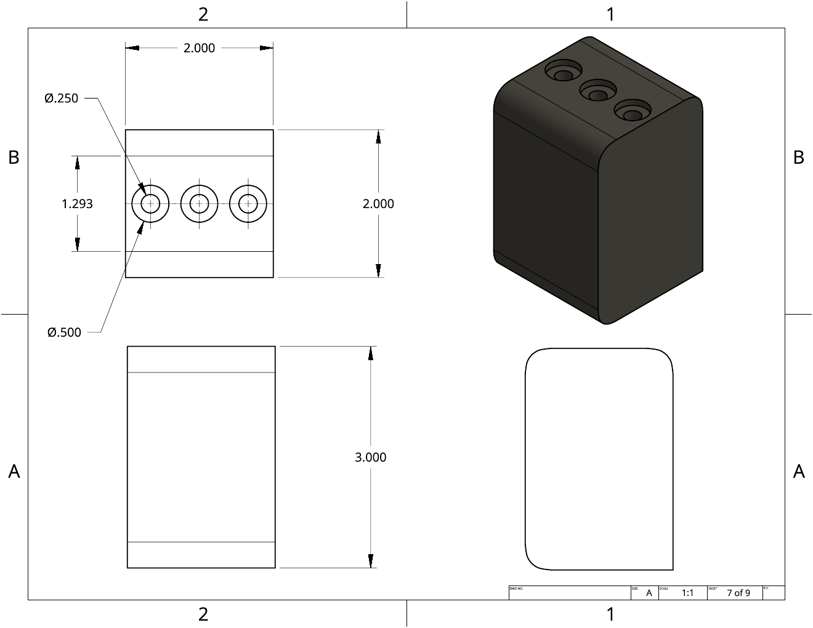
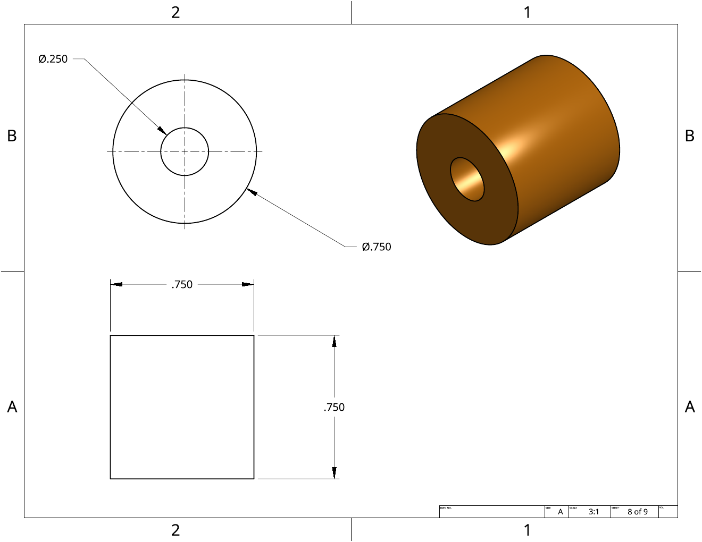
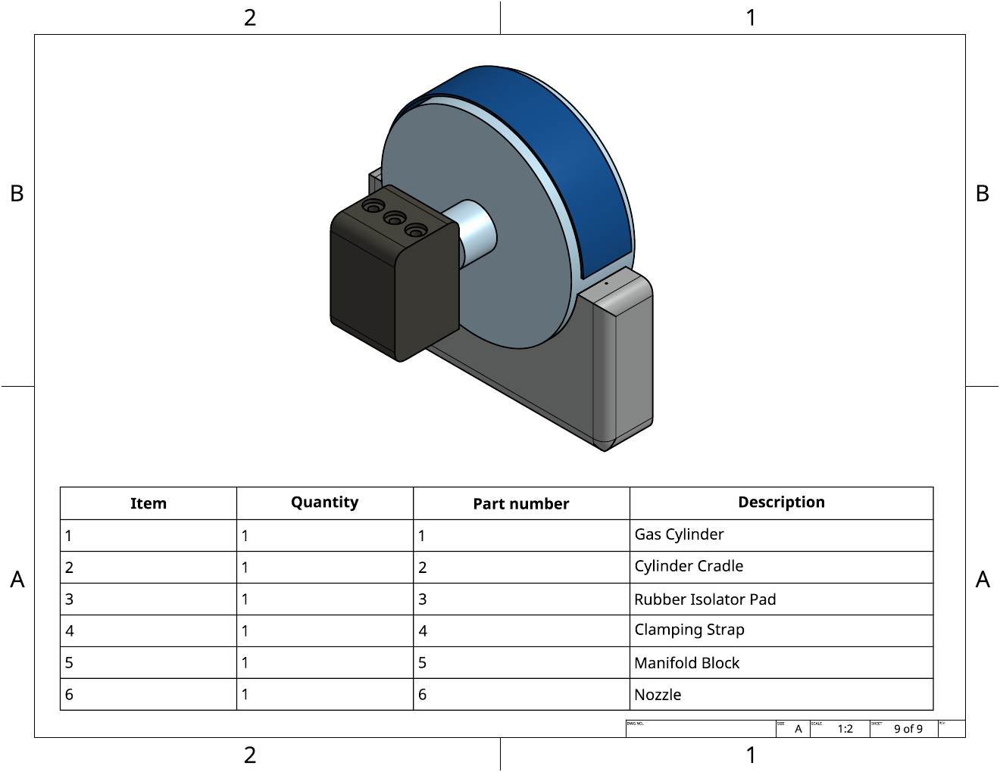
60.1-Second HIL Telemetry Run
Actual saved CSV output from the run, not a placeholder dataset.
0.0, 18.1, 34.1, 50.1 s
Observed in the cycle following each vent command.
Down from 12.283 lb at the first logged event.
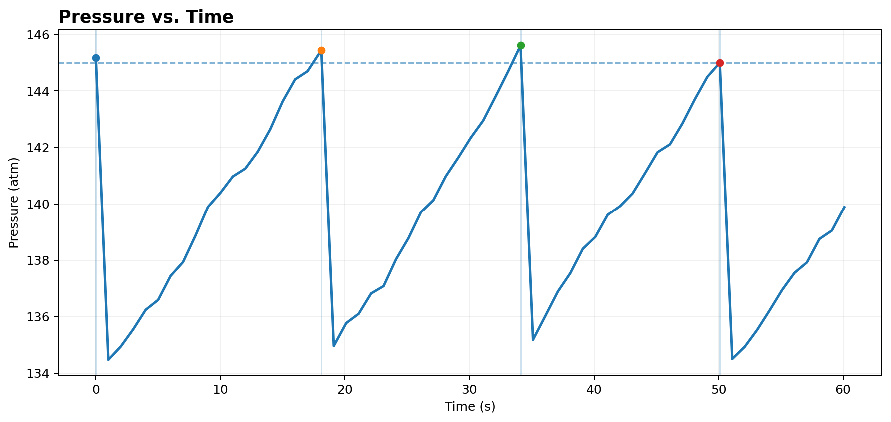
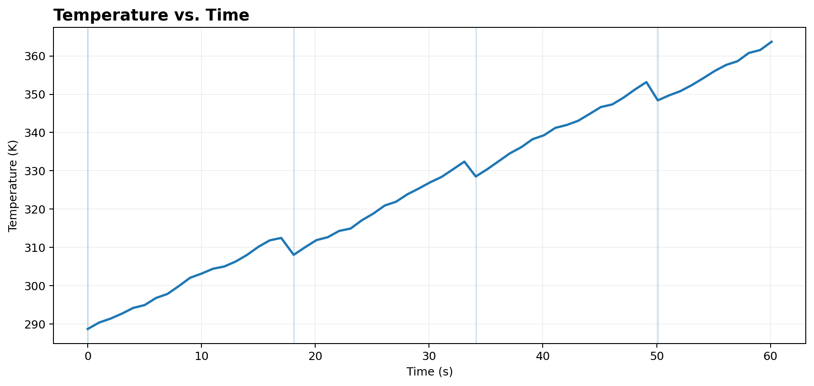
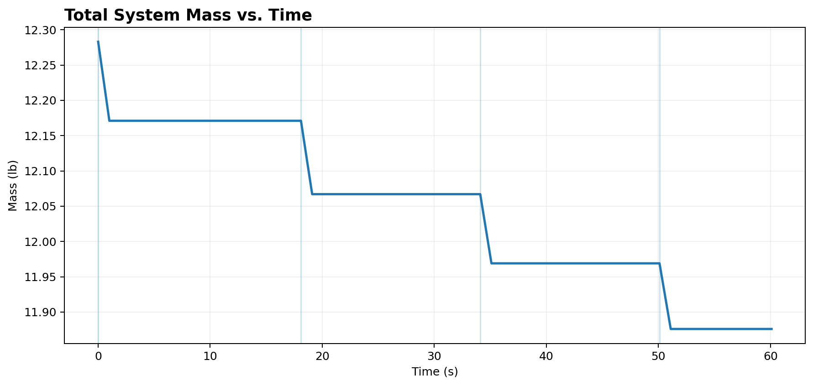
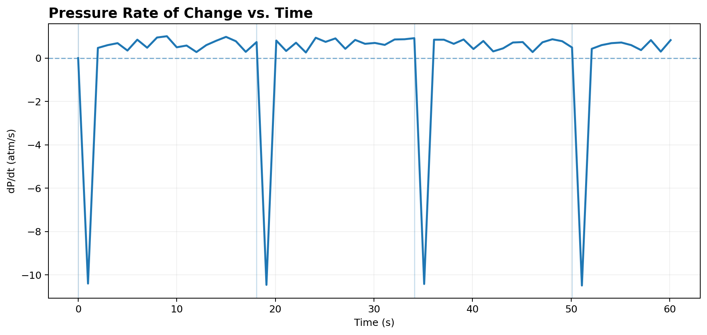
Safety-event table
| Time | Pressure | dP/dt | Servo | Mass |
|---|---|---|---|---|
| 0.0 s | 145.18 atm | 0.00 atm/s | 90° OPEN | 12.283 lb |
| 18.1 s | 145.44 atm | 0.74 atm/s | 90° OPEN | 12.171 lb |
| 34.1 s | 145.61 atm | 0.92 atm/s | 90° OPEN | 12.067 lb |
| 50.1 s | 145.00 atm | 0.49 atm/s | 90° OPEN | 11.969 lb |
Python HIL Controller
The implementation below reflects the Python HIL controller used to produce the telemetry behavior documented on this page.
# Aerospace Payload Pressure Safety & Control System
# Hardware-in-the-loop (HIL) telemetry simulation
import csv
import random
import time
TOTAL_HARDWARE_MASS_LB = 10.43
GAS_NAME = "High-Pressure Nitrogen (N2)"
CYLINDER_VOLUME_L = 5.0
GAS_CONSTANT_R = 0.0821 # L·atm/(mol·K)
MAX_SAFE_PRESSURE = 145.0 # atm
TEMPERATURE_K = 293.15 # 20 °C
GAS_MOLES = 30.0
MOLECULAR_WEIGHT_N2_G = 28.01
CSV_FILE = "aerospace_payload_telemetry.csv"
servo_angle = 0
previous_pressure = None
previous_time = None
gas_moles = GAS_MOLES
temperature_k = TEMPERATURE_K
# Telemetry fields:
# Timestamp, temperature, pressure, dP/dt, servo status, total mass
with open(CSV_FILE, "w", newline="") as file:
writer = csv.writer(file)
writer.writerow([
"Timestamp (s)",
"Port 3: Temp (K)",
"Port 2: Pressure (atm)",
"Pressure Rate (atm/s)",
"Port 1: Servo Status",
"Total System Mass (lbs)"
])
start_time = time.time()
while True:
current_time = time.time() - start_time
# Simulated environmental heating.
temperature_k += random.uniform(0.6, 2.2)
# Ideal-gas pressure model: P = nRT/V
pressure_atm = (gas_moles * GAS_CONSTANT_R * temperature_k) / CYLINDER_VOLUME_L
if previous_pressure is None or previous_time is None:
dp_dt = 0.0
else:
dt = current_time - previous_time
dp_dt = (pressure_atm - previous_pressure) / dt if dt > 0 else 0.0
# N2 mass: mol × g/mol, converted to pounds.
gas_mass_lb = (gas_moles * MOLECULAR_WEIGHT_N2_G) / 453.59237
total_mass_lb = TOTAL_HARDWARE_MASS_LB + gas_mass_lb
if pressure_atm > MAX_SAFE_PRESSURE:
servo_angle = 90
print("CRITICAL OVERPRESSURE DETECTED!")
print(f" -> Pressure: {pressure_atm:.1f} atm")
print(f" -> dP/dt: {dp_dt:.2f} atm/s")
print(" -> Port 1 Servo: 90° (OPEN - VENTING)")
# Simulated 6% vent event.
gas_moles *= 0.94
temperature_k -= 6.0
else:
servo_angle = 0
print(
f"Pressure: {pressure_atm:.1f} atm | "
f"dP/dt: {dp_dt:.2f} atm/s | "
f"Temp: {temperature_k:.1f} K | "
f"Mass: {total_mass_lb:.3f} lbs | Status: NOMINAL"
)
servo_status = (
"90° (OPEN - VENTING)" if servo_angle == 90
else "0° (CLOSED)"
)
# Recalculate total mass after a safety vent so the logged state
# reflects the reduced gas inventory.
gas_mass_lb = (gas_moles * MOLECULAR_WEIGHT_N2_G) / 453.59237
total_mass_lb = TOTAL_HARDWARE_MASS_LB + gas_mass_lb
with open(CSV_FILE, "a", newline="") as file:
writer = csv.writer(file)
writer.writerow([
round(current_time, 1),
round(temperature_k, 2),
round(pressure_atm, 2),
round(dp_dt, 2),
servo_status,
round(total_mass_lb, 3)
])
previous_pressure = pressure_atm
previous_time = current_time
time.sleep(1)
Model Boundaries, Assumptions & Next Steps
What this run demonstrates
- A repeatable thermodynamic state update.
- Pressure and dP/dt telemetry.
- Threshold-based automated control logic.
- Simulated actuator response and gas depletion.
- Persistent CSV logging for later analysis.
What it does not claim
- It is not a physical pressure-vessel test.
- It is not a flight qualification or certification analysis.
- The servo and vent response are simulated within the HIL environment.
- The ideal-gas model is a simplified engineering model and does not replace detailed real-gas, structural, thermal, or fluid-flow analysis.
Future engineering work
Future work will include 3D printing the current model to check whether the modeled dimensions and tolerances work correctly in a physical part. I also plan to build a real-life simulation that connects to the computational simulation developed in Python, allowing the same pressure and temperature behavior to be evaluated with physical hardware.
Project Summary
This portfolio demonstrates an end-to-end engineering workflow: define a safety problem, design the mechanical system in CAD, document the geometry, implement a physics-based computational model, build an automated safety controller in Python, run the HIL environment, and analyze the resulting telemetry.